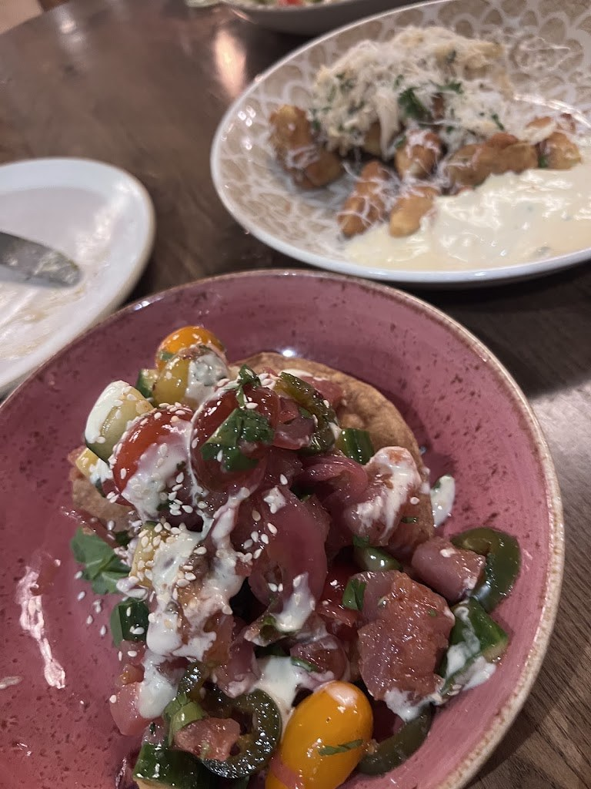
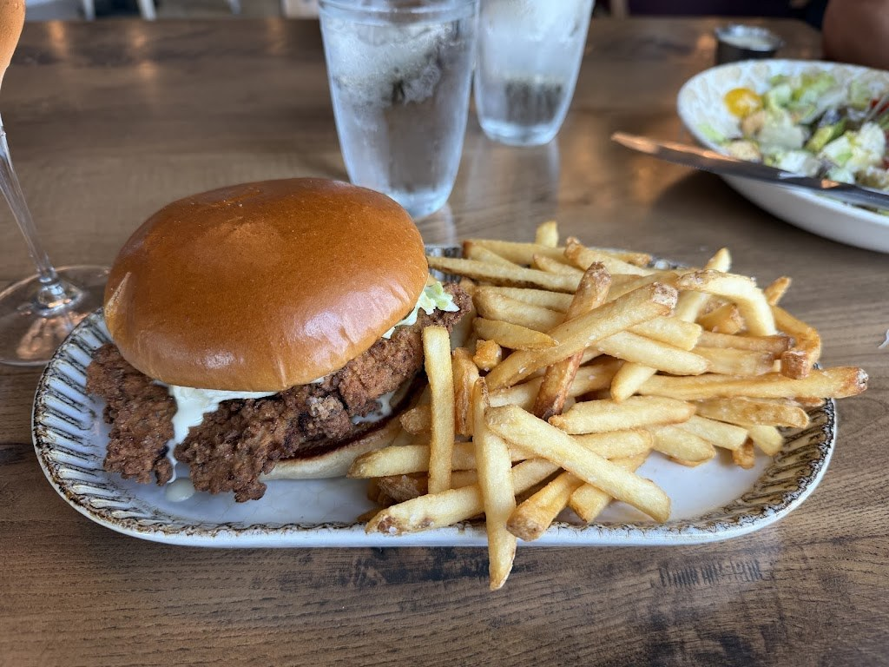

Visit Thorny Oyster
An upscale coastal seafood and raw bar inside the Pearl Hotel in downtown Bay St. Louis, with raw and grilled oysters, a seafood plateau, and Sunday brunch.
Address: 104 N Beach Blvd, Bay St. Louis, MS 39520
Hours: Monday closed; Tuesday and Wednesday, 5:00 PM to 9:00 PM; Thursday, 11:00 AM to 9:00 PM; Friday and Saturday, 11:00 AM to 10:00 PM; Sunday, 10:00 AM to 2:00 PM.
Phone: (228) 688-0401
Gallery


All three photos are real photos from the business's Google Maps listing. They show the dining room with arched windows, bubble chandeliers, and the bar, a pink bowl of tuna poke, and a fried chicken sandwich on a brioche bun with fries.
Contact
Thorny Oyster serves Bay St. Louis, MS. Questions? Call (228) 688-0401.